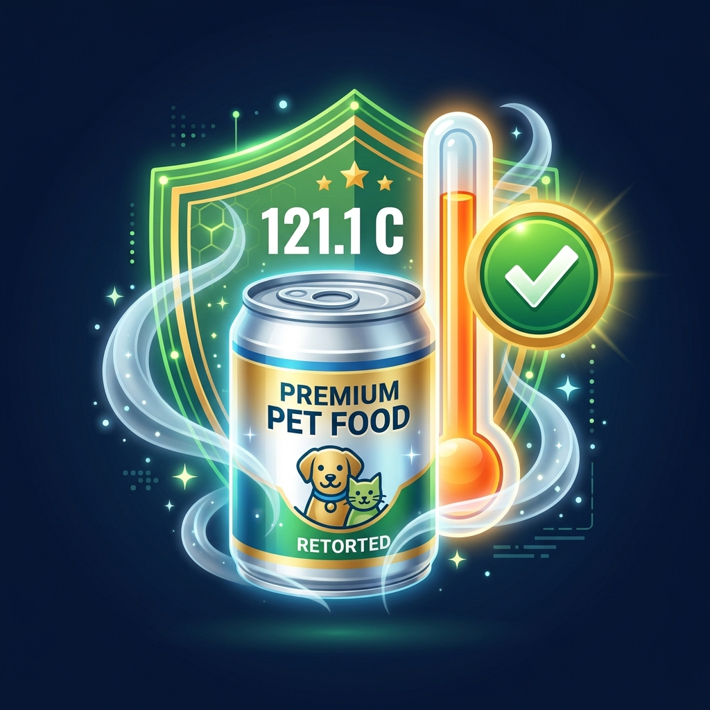

澳洲 H5N1 禽流感對 Nestlé 寵物食品進口邊境風險評估總覽
風險指數 28 分 (< 30)，商業禽場保持 0 宗感染，可正常安排採購下單與海運出貨。
全澳洲商業家禽、蛋場與乳牛場維持 0 宗感染，符合 WOAH 清潔宣告。
皆局限於沿海野生海鳥（鳳頭燕鷗/銀鷗），內陸養殖舍與 Blayney 廠區零波及。
基於防檢署宣告慣例，商業家禽 0 感染未觸發行政區劃（NSW）邊境禁令。
台灣防檢署 (TW APHIA) 邊境法規與 Blayney 兩大產品安全驗證
1. 防檢署「州層級 (State-Level)」宣告機制
- 行政區劃管制原則：台灣防檢署以全州 (NSW) 為最小疫區宣告單位。若 NSW 商業禽場確診，全州所有寵物食品廠均適用封鎖。
- 廠地緣距離非限制關鍵：工廠距確診點公里數不影響邊境條例，評估核心在於 NSW 全州商業家禽 0 宗感染狀態。
- 工廠註冊現況：Blayney 廠尚未向台灣申請個別註冊（申請耗時 > 2 年）。因此目前全數依賴「全州清冊自由 (Area Freedom)」通關。
2. Purina Blayney 廠兩大進口品項與滅菌安全

經歷 121°C 以上高溫高壓商業滅菌（Retort Sterilization）超 30 分鐘，禽流感病毒 (熱敏感，70°C 秒殺) 徹底去活化，具完全防禦力。
經雙螺桿擠壓機 (Extruder) > 110°C 高溫高壓蒸煮與烘乾，病毒風險極低。僅需控管包裝後段之環境交叉污染。
CSIRO ACDP 全基因組定序：全澳 100% H5N1 B3.2 (舊 H7 已根除)
起源於南美洲跨越南大洋擴散至亞南極島嶼 (赫德島 Heard Island)，已高度適應遠洋海鳥與海洋哺乳動物 (海豹/海獅)。非美國乳牛爆發之 B3.13 基因型。
順著強勁亞南極西風帶與寒流由巨鸌、賊鷗分批帶入西澳、南澳與東岸，序列高度同源。舊有本土 H7 病毒株已於 2025 年初由 WOAH/DAFF 宣告全數消除。
近 3~6 個月在海鳥群中產生高傳染性新重組株機率為 15%~25% (低度)；僅當病毒於 12~24 個月穿透至內陸淡水雁鴨時，重組機率升至 75%~85%。
澳洲候鳥遷徙動態 GIS 地圖與多源環境預測模型
海面溫差產生強烈上升氣流，遠洋海鳥順著亞南極西風帶「滑翔衝浪」抵達澳洲南部。
冷水湧升流帶來豐富魚蝦，驅動燕鷗與海鷗在特定沿海沙洲高密度聚集，形成超級傳播點。
內陸乾旱高溫時，沿海海鷗被迫深入內陸河口尋求淡水，引發基因重組風險。
定量評估模型 5 大維度權重與敏感度控制台
官方強制圈養令與物理防鳥網，阻絕野生海鳥接觸達 85% 以上。
10 月大部隊向南方濕地分散為高危期，隔年 3 月北返後快速收斂。
紅狐/野猫具夜間侵入習性，為突破防護網之跨物種媒介。
H5N1 潛伏期短 (1-3天)、致死高，有利於農場 24h 內撲殺止血。
防檢署以全州宣告。監控全州野鳥個案數與向內陸擴散趨勢（當前 17 起沿海個案）。
澳洲 H5N1 疫情走勢與野鳥遷徙滯留 2 年推演時間軸 (2026.06 – 2028.06)
雙 Y 軸同步對照「野鳥確診事件數走勢 (左軸)」與「跨國候鳥在澳滯留數量 (右軸)」，完整涵蓋 2 個年度遷徙循環
Nestlé Purina 供應鏈進口決策門檻與應對 SOP
正常下單與海運出貨
- 商業禽場：維持 0 宗商業確診。
- 採購動作：正常安排 Blayney 廠訂單生產與海運 shipping。
- 通關：憑澳洲官方衛生證明書正常放行。
建立 6~8 週安全庫存緩衝
- 商業禽場：野鳥進入 10 月高峰或外州出現確診。
- 採購動作：建立台灣本地 6~8 週 Buffer 庫存。
- 檢驗：要求 Blayney 廠提供批次高溫滅菌證明。
暫緩訂單並啟動替代廠源
- 商業禽場：NSW 商業家禽爆發確診。
- 採購動作：立即暫緩新增 Blayney 採購訂單。
- 應變：啟動泰國/歐洲替代廠源供應 SOP。